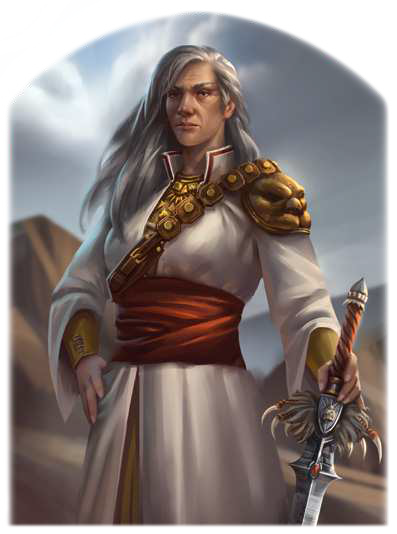

"Gewitter sind ein Geschenk der Göttin. Sie sind kraftvoll und lassen uns die Gegenwart der Göttin spüren. Mit dem, was sie uns darin offenbart, sind wir bereit, ihren Willen zu vollstrecken. Wir sind Schild und Wehr der Gläubigen, wir werden ebenso gewaltig und unaufhaltbar sein wie Donner und Blitz."
Von Ayla von Schattengrund mit ihren letzten Worten als neues Schwert der Schwerter benannt, steht Bibernell seit Kurzem dem Bund des Schwertes vor. Sie gilt als introvertierte Mystikerin, die sich lange Jahre mit der alttulamidischen Deutung von Rondras Zeichen beschäftigte. In der mittelreichisch geprägten Kirche Rondras hatte sie zunächst wenige Verbündete. Inzwischen aber kann sie sich bedingungslos auf jene verlassen, die sie näher kennengelernt haben und in den sanften Worten der Matriarchin einen Weg erkennen, die Kirche Rondras zu neuem Glanz zu führen. In ihrem Streben, den Sinn hinter den Dingen zu erkennen, ist Bibernell stets bemüht, alle denkbaren Blickwinkel zu beleuchten. Sie ist daher auch unkonventionellen Methoden gegenüber nicht abgeneigt - so lange sie diese auf Rondras Willen zurückführen kann.
Volkes Stimme
- "Sie wird die Kirche der Donnerkönigin zu neuem Ruhm führen, denn nirgends wird Rondra so elegant und gleichzeitig so kompromisslos verehrt wie in den Tulamidenlanden."
- "Dieser ganze mystische Schnickschnack, den sie vollführt, wird unser Untergang sein!
So jedenfalls kann sich die Kirche nicht gegen die Anfeindungen der Korjünger behaupten.
Da mag sie noch so redegewandt sein, letztlich zählt allein das Schwert."